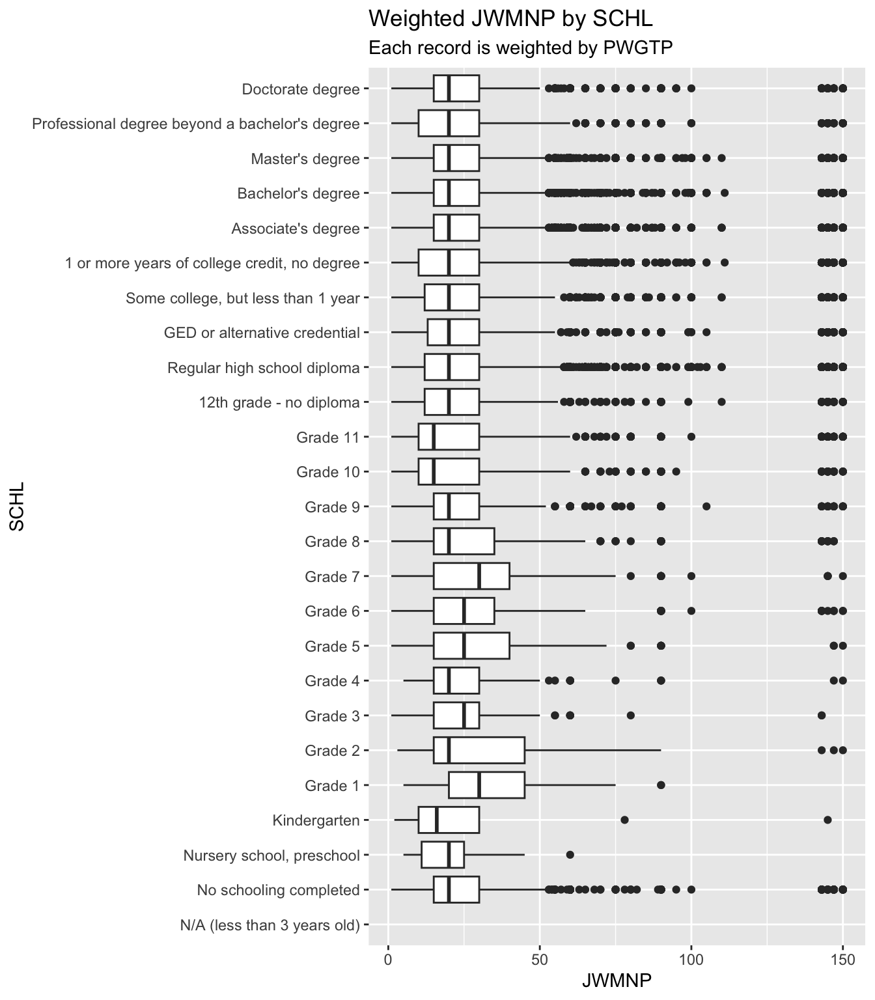

The Public Use Microdata Sample (PUMS) data is a set of person-level records from the U.S. Census Bureau served through an API. This report builds a small toolkit in R for working with that data. We focus on the survey years 2021, 2022, 2023, and 2024.
Each row of PUMS data is a sampled person and PWGTP, is the person weight used to estimate how many people in the population would be represented by this record. Every summary and plot use PWGTP.
The report consists of three parts.
Data processing. Functions that read the variable descriptions the API publishes, query the API, and return tibbles with numbers, factors, and times.
Generic functions.summary() and plot() methods for those tibbles that use the weights.
Investigation. The functions are used to ask whether commute time and age differ by education level in North Carolina, and whether that changed from 2021 to 2024.
This implementation uses a Census API key stored in the CENSUS_KEY environment variable. The quantreg package has to be installed for the weighted boxplots.
# tidyverse attaches dplyr, tibble, purrr, ggplot2, and lubridate. httr makes the web requests and jsonlite parses JSON.library(httr)library(jsonlite)library(tidyverse)
── Attaching core tidyverse packages ──────────────────────── tidyverse 2.0.0 ──
✔ dplyr 1.2.1 ✔ readr 2.2.0
✔ forcats 1.0.1 ✔ stringr 1.6.0
✔ ggplot2 4.0.3 ✔ tibble 3.3.1
✔ lubridate 1.9.5 ✔ tidyr 1.3.2
✔ purrr 1.2.2
── Conflicts ────────────────────────────────────────── tidyverse_conflicts() ──
✖ dplyr::filter() masks stats::filter()
✖ purrr::flatten() masks jsonlite::flatten()
✖ dplyr::lag() masks stats::lag()
ℹ Use the conflicted package (<http://conflicted.r-lib.org/>) to force all conflicts to become errors
Part 1: Data Processing
The API returns mapped values. A person’s SEX returns 1 or 2, etc. The context behind these mappings are published in the variables.json file from the census bureau. Each variable in variables.json has a label and a values entry. Categorical variables’ values holds item list of code and the description, whereas continuous variables hold a range of min, max, and description.
This helper function lists the varaibles needed and defines sort_by_code() because the JSON files do not store the codes in numeric order, while factor levels should follow the code order.
# variables the project needs. The state variable is named ST in the 2021 and# 2022 files and STATE in the 2023 and 2024 files, so it is added separately# inside parse_pums_variables().pums_vars_needed <-c("AGEP", "GASP", "GRPIP", "JWAP", "JWDP", "JWMNP","PWGTP", "FER", "HHL", "SCH", "SCHL", "SEX","REGION", "DIVISION")# order a named vector of code -> description by numeric code. If any code# isn't numeric, leave the original order alone.sort_by_code <-function(items) { codes <-suppressWarnings(as.numeric(names(items)))if (is.null(items) ||anyNA(codes)) return(items) items[order(codes)]}
The parsing function takes the JSON after it has been read into an R list and returns one element per needed variable. Each element is itself a list with the variable’s label, its items , and its ranges. The state variable is stored under the single name STATE, so downstream ingestors do not need to account for which year the data is from.
# pull the needed variables out of one parsed variables.json.# parsed: list from fromJSON(..., simplifyVector = FALSE)# year: single survey year (decides whether to look for ST or STATE)parse_pums_variables <-function(parsed, year) { all_vars <- parsed$variables state_var <-if (year <=2022) "ST"else"STATE" wanted <-c(pums_vars_needed, state_var) missing_vars <-setdiff(wanted, names(all_vars))if (length(missing_vars) >0) {stop("Variables not found in the ", year, " file: ",paste(missing_vars, collapse =", ")) } out <-lapply(all_vars[wanted], function(v) {list(label = v$label,items =sort_by_code(unlist(v$values$item)),ranges =lapply(v$values$range, function(r) {list(min =as.numeric(r$min), max =as.numeric(r$max),description = r$description) }) ) })# store the state variable under one name for every yearnames(out)[names(out) == state_var] <-"STATE" out}
The second function checks the year, builds the URL for that year’s variables.json, requests it with GET(), stops on an HTTP error, and passes the parsed JSON to the function above. Keeping the request and the parsing in separate functions means the parser can be tested on a saved file without touching the API.
# GET the variables.json for one year and parse it.get_pums_variables <-function(year) {if (length(year) !=1||!(year %in%2021:2024)) {stop("year must be a single value: 2021, 2022, 2023, or 2024") } url <-paste0("https://api.census.gov/data/", year,"/acs/acs1/pums/variables.json") resp <-GET(url)stop_for_status(resp) parsed <-fromJSON(content(resp, as ="text", encoding ="UTF-8"),simplifyVector =FALSE)parse_pums_variables(parsed, year)}
Checking function on year 2024
Check the parser output. Input year 2024. The output should be 15 variables and SEX should show its two codes Male and Female.
The names are the 14 variables as well as STATE. SEXhas two codes: 1 is Male and 2 is Female.
The state variable is called ST in the 2021 and 2022 files. The parser should hide that difference, so asking for 2021 should still give a list that contains STATE.
The year check should reject anything outside 2021 to 2024. The chunk below is set to keep rendering after an error so the message shows on the page.
get_pums_variables(2020)
Error in `get_pums_variables()`:
! year must be a single value: 2021, 2022, 2023, or 2024
The parser was shown to run successfully for 2024. Now we run it on all years and save the results for later code to reference.
Building the lists for all four years
One list per year is built and saved to data/pums_variables.rds. The if statement prevents redownloading on rerenders.The saved lists are then read back in as pums_vars.
The first two lines confirm the four years and the 15 variables per year. The third shows the mappings for SEX. The last shows that the state list has 52 entries, the 50 states, DC, and Puerto Rico. Puerto Rico will be dropped when state input is validated.
Parsing an API response
A request to the PUMS API consists of the base address for the year, a get= list of variables, a for= clause for the geography, any optional filters, and the key. Before writing the main query function, one small request shows what the API sends back. Sex, person weight, age, arrival time at work, travel time to work, and education for people in North Carolina (for=state:37) who are 30 years old with a 45 minute commute (AGEP=30&JWMNP=45), which keeps the response short.
The key is read from the CENSUS_KEY environment variable instead of being typed into the document, because this code is published with the site.
census_key <-Sys.getenv("CENSUS_KEY")stopifnot("Set CENSUS_KEY in .Renviron and restart R"=nzchar(census_key))url <-paste0("https://api.census.gov/data/2024/acs/acs1/pums","?get=SEX,PWGTP,AGEP,JWAP,JWMNP,SCHL","&for=state:37&AGEP=30&JWMNP=45","&key=", census_key)resp <-GET(url)status_code(resp)
[1] 200
cat(substr(content(resp, as ="text", encoding ="UTF-8"), 1, 300))
A status of 200 means the request was successful. In the JSON body returned, the first array is the header and each following array is one person’s record. Every value arrives as a string. AGEP and JWMNP appear twice. The API repeats any variable used as a filter at the end of each row. The geography comes back as a column named state.
The helper turns the JSON text into a tibble. It uses the first row as the column names and drops any repeated column. First it checks if the return is JSON to ensure there is no error response.
# turn the text of a Census API reply into a tibble of character columns.# the result is an array of arrays: row 1 is the header, the rest is data.parse_census_json <-function(json_text) {if (!validate(json_text)) {stop("The Census API did not return JSON. The reply began: ",substr(json_text, 1, 200), call. =FALSE) } mat <-fromJSON(json_text) # a character matrixcolnames(mat) <- mat[1, ]# Variables used as filters are repeated at the end; keep the first copy mat <- mat[-1, !duplicated(colnames(mat)), drop =FALSE]as_tibble(mat)}
This helper works on the object GET() returns. It checks the HTTP status and stops with the API’s own message when something is wrong. For example, a misspelled variable name produces a status 400 with a short explanation, and a query that matches no records produces a 204. Otherwise it passes the text to the first helper.
# convert the object returned by GET() into a tibblepums_response_to_tibble <-function(resp) { reply <-content(resp, as ="text", encoding ="UTF-8")if (status_code(resp) ==204) {stop("The query matched no records.", call. =FALSE) }if (status_code(resp) !=200) {stop("Census API request failed (status ", status_code(resp), "): ", reply, call. =FALSE) }parse_census_json(reply)}
Applying it to the response from above gives a tibble with one row per person.
The repeated AGEP and JWMNP columns are dropped, state is kept, and every column is consistently a character vector.
Converting variable types
The tibble from the last section is all text. Numeric variables need to be numbers and categorical variables need to be factors with labels. Both helpers use the lists saved earlier in pums_vars, so the labels always match the survey year.
Some numeric codes mean “not applicable”. For JWMNP (travel time to work), 0 means the person is not a worker or worked from home, and in 2023 888 means the value was suppressed. GASP and GRPIP have similar codes. If they remained as numbers, they would skew every mean, so they become NA. The helper finds them from the labels (a label starting with “N/A” or “Suppressed”). A real zero is kept: for AGEP, 0 means under 1 year old. Codes have to be compared as numbers. The API sends 1 where the variables file has 01, and the 2021 file uses 00 for an age of 0. Matching as text would miss these, so both sides are converted to numbers first.
For categorical variables the N/A code is kept as its own level.
# codes that mean "not applicable" or "suppressed" for one variable. they are# found from the labels, so the rule works for every year's filena_codes_for <-function(var_info) { items <- var_info$itemsif (length(items) ==0) return(character(0))names(items)[grepl("^(N/A|Suppressed)", items)]}# character codes -> numbers, with the variable's N/A codes set to NAconvert_numeric <-function(x, var_info) { values <-as.numeric(x) values[values %in%as.numeric(na_codes_for(var_info))] <-NA values}# character codes -> factor whose levels are the variable's labels, in code# order. codes are matched as numbers. unknown codes trigger a warningconvert_factor <-function(x, var_info) { codes <-as.numeric(x) items <- var_info$items known <-as.numeric(names(items)) unknown <-setdiff(unique(codes[!is.na(codes)]), known)if (length(unknown) >0) {warning("Codes not found in the variable list: ",paste(unknown, collapse =", "), call. =FALSE) }factor(codes, levels = known, labels =unname(items))}
A few direct calls show the behavior. The first turns the N/A and suppressed codes into NA, the second keeps a real zero, and the third shows that the API’s 1 finds the file’s 01.
# A tibble: 58 × 7
SEX PWGTP AGEP JWAP JWMNP SCHL state
<fct> <dbl> <dbl> <chr> <dbl> <fct> <chr>
1 Male 232 30 82 45 Bachelor's degree 37
2 Male 153 30 67 45 Regular high school diploma 37
3 Male 240 30 55 45 Regular high school diploma 37
4 Male 129 30 109 45 1 or more years of college credit, no de… 37
5 Male 180 30 187 45 Regular high school diploma 37
6 Male 236 30 79 45 Master's degree 37
7 Male 120 30 49 45 Regular high school diploma 37
8 Male 129 30 91 45 Bachelor's degree 37
9 Male 68 30 103 45 Bachelor's degree 37
10 Male 73 30 271 45 Regular high school diploma 37
# ℹ 48 more rows
levels(census_typed$SEX)
[1] "Male" "Female"
PWGTP, AGEP, and JWMNP are now numeric (<dbl>), and SEX is a factor with the levels Male and Female. JWAP. The arrival time at work is still text and will use a helper to convert to datetime.
Time variables
We have two times variables. JWAP (when the person arrives at work) and JWDP (when they leave for work). Neither comes as a clock time. Each value is a code for a window of time, such as “7:30 a.m. to 7:34 a.m.”. To use them as times, each window is replaced by its midpoint.
JWAP uses 5 minute windows, while JWDP uses 5, 10, and 30 minute windows. The helper reads the start and end times out of each label. The midpoint is the time halfway between the two times in the label, so the midpoint of “7:30 a.m. to 7:34 a.m.” is 7:32. Codes that mean “not applicable” (not a worker, or worked from home) or “suppressed” have no window, so they become NA.
The result is a lubridate period, which stores the time of day as hours, minutes, and seconds after midnight.
# "7:30 a.m." -> seconds after midnight. 12 a.m. is hour 0 and 12 p.m. is# hour 12, which is what the %% 12 handles.clock_to_seconds <-function(clock) { hour <-as.numeric(sub(":.*", "", clock)) minute <-as.numeric(sub("^\\d{1,2}:(\\d{2}).*", "\\1", clock)) pm <-grepl("p\\.m\\.", clock) (hour %%12+ifelse(pm, 12, 0)) *3600+ minute *60}# "7:30 a.m. to 7:34 a.m." -> midpoint in seconds after midnight, or NA when# the label has no window (N/A and suppressed codes).label_to_midpoint <-function(label) { clocks <-regmatches(label, gregexpr("\\d{1,2}:\\d{2} [ap]\\.m\\.", label))[[1]]if (length(clocks) !=2) return(NA_real_) start <-clock_to_seconds(clocks[1]) end <-clock_to_seconds(clocks[2])if (end < start) end <- end +86400# a window that crosses midnight (start + (end - start) /2) %%86400}# character codes -> lubridate periods holding each window's midpoint.# codes are matched as numbers, as in the other helpers.convert_time <-function(x, var_info) { items <- var_info$items midpoints <-unname(vapply(items, label_to_midpoint, numeric(1))) midpoints[names(items) %in%na_codes_for(var_info)] <-NAseconds_to_period(midpoints[match(as.numeric(x), as.numeric(names(items)))])}
In the 2024 file the code 088 is the window 7:30 a.m. to 7:34 a.m., and the API sends it as 88.
pums_vars[["2024"]]$JWAP$items[["088"]]
[1] "7:30 a.m. to 7:34 a.m."
convert_time("88", pums_vars[["2024"]]$JWAP)
[1] "7H 32M 0S"
convert_time("0", pums_vars[["2024"]]$JWAP)
[1] NA
Applying it to the tibble converts the arrival time.
# A tibble: 58 × 7
SEX PWGTP AGEP JWAP JWMNP SCHL state
<fct> <dbl> <dbl> <Period> <dbl> <fct> <chr>
1 Male 232 30 7H 2M 0S 45 Bachelor's degree 37
2 Male 153 30 5H 47M 0S 45 Regular high school diploma 37
3 Male 240 30 4H 47M 0S 45 Regular high school diploma 37
4 Male 129 30 9H 17M 0S 45 1 or more years of college credit, … 37
5 Male 180 30 15H 47M 0S 45 Regular high school diploma 37
6 Male 236 30 6H 47M 0S 45 Master's degree 37
7 Male 120 30 4H 17M 0S 45 Regular high school diploma 37
8 Male 129 30 7H 47M 0S 45 Bachelor's degree 37
9 Male 68 30 8H 47M 0S 45 Bachelor's degree 37
10 Male 73 30 22H 47M 0S 45 Regular high school diploma 37
# ℹ 48 more rows
JWAP is now a period column. The first row’s code 88 became 7:32, the middle of its window, and a person with no arrival time would show NA. Every variable type the project needs can be converted with the helper functions.
Querying one year
The helper functions can turn a response into a tibble, and convert codes into numbers, factors, and times. The single-year query function chains them. It checks the user’s inputs, builds the request URL from the survey year, the variables, and the geography, sends the request with GET(), turns the reply into a tibble, and converts each column to its proper type using that year’s variable lists.
Builds the URL.
# Build the request URL. The key is part of it, so don't print the result.build_pums_url <-function(year, vars, for_clause, key) {paste0("https://api.census.gov/data/", year, "/acs/acs1/pums","?get=", paste(vars, collapse =","),"&for=", for_clause,"&key=", key)}
Apply the right conversion to each requested column.
# convert each requested column using one year's variable lists.convert_pums_types <-function(data, year_lists, numeric_vars, cat_vars) { time_vars <-c("JWAP", "JWDP")for (var in numeric_vars) { data[[var]] <-if (var %in% time_vars) {convert_time(data[[var]], year_lists[[var]]) } else {convert_numeric(data[[var]], year_lists[[var]]) } }for (var in cat_vars) { data[[var]] <-convert_factor(data[[var]], year_lists[[var]]) } data}
Checking the inputs
The query should fail early, with a message that says what to fix, instead of sending a bad request to the API. year must be a single value from 2021 to 2024. numeric_vars may only contain AGEP, GASP, GRPIP, JWAP, JWDP, JWMNP, and PWGTP, and needs at least one variable other than PWGTP. The person weight PWGTP is always returned, so it is added if the user leaves it out. cat_vars may only contain FER, HHL, SCH, SCHL, and SEX, and needs at least one.
This checks one set of variable names against its allowed values, so the same code serves both arguments.
pums_numeric_options <-c("AGEP", "GASP", "GRPIP", "JWAP", "JWDP", "JWMNP")pums_cat_options <-c("FER", "HHL", "SCH", "SCHL", "SEX")# stop unless `values` is a non-empty character vector made only of `allowed`# names. the message names the offending values and lists the options.check_choices <-function(values, allowed, arg_name) {if (length(values) ==0) {stop(arg_name, " must include at least one variable. Choose from: ",paste(allowed, collapse =", "), ".", call. =FALSE) }if (!is.character(values) ||anyNA(values)) {stop(arg_name, " must be a character vector of variable names.",call. =FALSE) } bad <-setdiff(values, allowed)if (length(bad) >0) {stop(arg_name, " cannot include ", paste(bad, collapse =", "),". Choose from: ", paste(allowed, collapse =", "), ".",call. =FALSE) }}
Runs all the checks and return the cleaned arguments, with PWGTP added to the numeric variables if it was missing.
# check the user's inputs and return them cleaned up.validate_pums_args <-function(year, numeric_vars, cat_vars) {if (length(year) !=1||is.na(year) ||!(year %in%2021:2024)) {stop("year must be a single value: 2021, 2022, 2023, or 2024",call. =FALSE) }check_choices(numeric_vars, c(pums_numeric_options, "PWGTP"), "numeric_vars")check_choices(cat_vars, pums_cat_options, "cat_vars") numeric_vars <-unique(c(numeric_vars, "PWGTP")) # PWGTP is always returnedif (length(setdiff(numeric_vars, "PWGTP")) ==0) {stop("numeric_vars must include at least one variable besides PWGTP. ","Choose from: ", paste(pums_numeric_options, collapse =", "), ".",call. =FALSE) }list(year = year, numeric_vars = numeric_vars, cat_vars =unique(cat_vars))}
Choosing the geography
The user picks a geography level, "Region", "Division", or "State", and then one place at that level, such as "North Carolina". The API wants this as a for= clause such as state:37. The helper functions below processes the user’s choice. The level has to be exactly one of the three. "All" is not a level because of the size of the data. The place is given as a code or as the label stored in the saved lists, such as 37 or "North Carolina/NC", in any capitalization, and the allowed places come from the lists saved in pums_vars. The value "all" returns every region, division, or state. If no place is given, each level has a default that contains North Carolina.
Set the defaults and look up the allowed places for a level.
# the place used when the user gives a level but no valuedefault_geography <-c(region ="South",division ="South Atlantic (South region)",state ="North Carolina/NC")# code -> label for one level, leaving out Puerto Ricogeography_choices <-function(level, year_lists) { items <- year_lists[[toupper(level)]]$items items[!grepl("^Puerto Rico", items)]}
Check the level, find the code for the place the user typed, and put the for= clause together. A value that matches nothing stops with a message that shows what is allowed.
# check the geography level and return it in lowercase, as the API spells itcheck_geography_level <-function(geography) {if (length(geography) !=1||is.na(geography) ||!(tolower(geography) %in%c("region", "division", "state"))) {stop("geography must be a single value: \"Region\", \"Division\", or ","\"State\". \"All\" is not available because of the size of the data.",call. =FALSE) }tolower(geography)}# find the code for what the user typed: a code (37) or a label as stored in# the saved lists (North Carolina/NC), in any capitalizationmatch_geography <-function(value, items, level) { typed <-tolower(trimws(as.character(value)))if (grepl("^[0-9]+$", typed)) { hit <-as.numeric(names(items)) ==as.numeric(typed) } else { hit <-tolower(items) == typed }if (!any(hit)) { shown <-if (length(items) <=10) items elsehead(items, 5)stop("\"", value, "\" is not a valid ", level, ". Use a code or a label, ","such as: ", paste(shown, collapse ="; "),if (length(items) >10) "; ..."else"", ".", call. =FALSE) }names(items)[hit][1]}# build the for= clause, for example "state:37". "all" becomes a * wildcard.build_for_clause <-function(level, value, year_lists) {if (is.null(value)) value <- default_geography[[level]]if (length(value) !=1||is.na(value)) {stop("geography_value must be a single value, or \"all\".", call. =FALSE) }if (tolower(trimws(as.character(value))) =="all") {return(paste0(level, ":*")) } items <-geography_choices(level, year_lists)paste0(level, ":", match_geography(value, items, level))}
The API adds a column named state, region, or division to the response. The last helper turns it into a factor of readable labels, in the same way as the other categorical variables. Levels that do not appear are dropped.
# turn the geography column into a factor of labelsconvert_geography <-function(data, level, year_lists) { data[[level]] <-convert_factor(data[[level]], year_lists[[toupper(level)]]) data <- data[!grepl("^Puerto Rico", as.character(data[[level]])), ] data[[level]] <-droplevels(data[[level]]) data}
Calling build_for_clause() directly shows what the user’s input turns into. The same state works as its label or its code, and "all" becomes *. Running a query with "all" downloads the whole country.
build_for_clause("division", "Mountain (West region)", lists_2024)
[1] "division:8"
build_for_clause("state", "all", lists_2024)
[1] "state:*"
build_for_clause("state", NULL, lists_2024)
[1] "state:37"
The query function
The query function defaults ask for the 2024 survey, AGEP and PWGTP as the numeric variables, SEX as the categorical variable, and the state of North Carolina. The key comes from the CENSUS_KEY environment variable, and the variable lists default to the pums_vars object loaded earlier. The inputs are validated first so that a bad request fails before call to API. The geography is checked next, before the tibble is returned it is given the class census, which is what lets the summary and plot methods in Part 2 recognize it.
# query the PUMS API for one year and return a tibble with converted types.get_pums_year <-function(year =2024,numeric_vars =c("AGEP", "PWGTP"),cat_vars ="SEX",geography ="State",geography_value =NULL,key =Sys.getenv("CENSUS_KEY"),var_lists = pums_vars) { args <-validate_pums_args(year, numeric_vars, cat_vars) year_lists <- var_lists[[as.character(args$year)]] level <-check_geography_level(geography) for_clause <-build_for_clause(level, geography_value, year_lists) url <-build_pums_url(args$year, c(args$numeric_vars, args$cat_vars), for_clause, key) data <-pums_response_to_tibble(GET(url)) data <-convert_pums_types(data, year_lists, args$numeric_vars, args$cat_vars) data <-convert_geography(data, level, year_lists)class(data) <-c("census", class(data)) data}
Calling it with no arguments returns every North Carolina record in the 2024 survey.
nc_2024 <-get_pums_year()nc_2024
# A tibble: 114,270 × 4
AGEP PWGTP SEX state
<dbl> <dbl> <fct> <fct>
1 23 60 Male North Carolina/NC
2 21 49 Male North Carolina/NC
3 20 24 Male North Carolina/NC
4 79 54 Female North Carolina/NC
5 18 79 Male North Carolina/NC
6 19 54 Female North Carolina/NC
7 22 58 Female North Carolina/NC
8 18 17 Female North Carolina/NC
9 22 30 Male North Carolina/NC
10 67 37 Female North Carolina/NC
# ℹ 114,260 more rows
The result has one row per sampled person, with AGEP and PWGTP as numbers, SEX as a factor, and the geography column state as a factor of state names. In our second call it asks for Wyoming, in 2022, with the weight, travel time, and arrival time as the numeric variables and sex and education as the categorical variables.
# A tibble: 5,962 × 6
PWGTP JWMNP JWAP SEX SCHL state
<dbl> <dbl> <Period> <fct> <fct> <fct>
1 43 NA NA Male Regular high school diploma Wyom…
2 53 NA NA Female Master's degree Wyom…
3 169 NA NA Female 1 or more years of college credit, no deg… Wyom…
4 248 NA NA Female Grade 8 Wyom…
5 246 NA NA Female Grade 3 Wyom…
6 202 NA NA Male Kindergarten Wyom…
7 61 NA NA Female Bachelor's degree Wyom…
8 55 10 5H 42M 0S Male Professional degree beyond a bachelor's d… Wyom…
9 62 10 4H 12M 0S Male GED or alternative credential Wyom…
10 73 NA NA Female 1 or more years of college credit, no deg… Wyom…
# ℹ 5,952 more rows
The columns are returned in the order requested and each have the correct type.
If the user leaves out the weight, the function adds it. Here only JWMNP is requested and PWGTP still comes back.
The geography level changes with geography. This call is for the New England division in 2023, the smallest of the divisions to download. The division column holds the division’s label, and the result carries the census class.
new_england_2023 <-get_pums_year(year =2023,geography ="Division",geography_value ="New England (Northeast region)")new_england_2023
# A tibble: 156,751 × 4
AGEP PWGTP SEX division
<dbl> <dbl> <fct> <fct>
1 79 57 Female New England (Northeast region)
2 53 17 Male New England (Northeast region)
3 89 11 Female New England (Northeast region)
4 35 71 Male New England (Northeast region)
5 20 11 Male New England (Northeast region)
6 68 80 Male New England (Northeast region)
7 21 69 Female New England (Northeast region)
8 21 19 Male New England (Northeast region)
9 26 59 Male New England (Northeast region)
10 84 27 Female New England (Northeast region)
# ℹ 156,741 more rows
inherits(new_england_2023, "census")
[1] TRUE
Calls that should fail
The following examples test the main validation errors.
get_pums_year(year =2020) # year out of range
Error:
! year must be a single value: 2021, 2022, 2023, or 2024
get_pums_year(year =c(2022, 2023)) # more than one year
Error:
! year must be a single value: 2021, 2022, 2023, or 2024
get_pums_year(geography ="All") # All is not a level
Error:
! geography must be a single value: "Region", "Division", or "State". "All" is not available because of the size of the data.
get_pums_year(geography =c("State", "Region")) # more than one level
Error:
! geography must be a single value: "Region", "Division", or "State". "All" is not available because of the size of the data.
get_pums_year(geography ="County") # not an available level
Error:
! geography must be a single value: "Region", "Division", or "State". "All" is not available because of the size of the data.
get_pums_year(geography_value ="Atlantis") # no such state
Error:
! "Atlantis" is not a valid state. Use a code or a label, such as: Alabama/AL; Alaska/AK; Arizona/AZ; Arkansas/AR; California/CA; ....
get_pums_year(geography ="Region", geography_value ="NC") # NC is not a region
Error:
! "NC" is not a valid region. Use a code or a label, such as: Northeast; Midwest; South; West.
get_pums_year(geography_value =c("NC", "SC")) # more than one place
Error:
! geography_value must be a single value, or "all".
get_pums_year(geography_value ="Puerto Rico") # not covered by the project
Error:
! "Puerto Rico" is not a valid state. Use a code or a label, such as: Alabama/AL; Alaska/AK; Arizona/AZ; Arkansas/AR; California/CA; ....
Each message names what was wrong and lists the allowed choices.
Querying several years
The single-year function does the work for one survey year. The multi-year function calls it once for each requested year, adds a year column that records which survey each row came from, and stacks the results into one tibble. The variables, the geography, and the key are passed through to the single-year function with ..., so those options and their defaults are defined in one place.
The years are checked first before anything is downloaded. The year column is a factor. Stacking tibbles with bind_rows() can drop the custom census class, so the function makes sure it is still present before returning.
# check the years and return them sorted and without repeatscheck_years <-function(years) {if (length(years) ==0||anyNA(years) ||!all(years %in%2021:2024)) {stop("years must be one or more of: 2021, 2022, 2023, 2024", call. =FALSE) }sort(unique(as.integer(years)))}# query several survey years and stack them into one census tibble.# ... holds the other options and is passed on to get_pums_year().get_pums_years <-function(years =2024, ...) { years <-check_years(years) results <-lapply(years, function(y) get_pums_year(year = y, ...))names(results) <- years data <-bind_rows(results, .id ="year") data$year <-factor(data$year, levels = years)# bind_rows() can drop the custom class, so make sure it is still thereif (!inherits(data, "census")) class(data) <-c("census", class(data)) data}
This call is for all four years for Wyoming, with the weight and travel time as the numeric variables and sex and education as the categorical variables.
# A tibble: 24,046 × 6
year PWGTP JWMNP SEX SCHL state
<fct> <dbl> <dbl> <fct> <fct> <fct>
1 2021 39 NA Female Grade 11 Wyomin…
2 2021 45 5 Male Regular high school diploma Wyomin…
3 2021 218 NA Female Bachelor's degree Wyomin…
4 2021 10 NA Female GED or alternative credential Wyomin…
5 2021 12 10 Male Regular high school diploma Wyomin…
6 2021 108 NA Female 1 or more years of college credit, no degree Wyomin…
7 2021 91 NA Male Regular high school diploma Wyomin…
8 2021 71 NA Female GED or alternative credential Wyomin…
9 2021 8 5 Male Regular high school diploma Wyomin…
10 2021 122 NA Male Grade 1 Wyomin…
# ℹ 24,036 more rows
table(wyoming_all_years$year)
2021 2022 2023 2024
5861 5962 6024 6199
inherits(wyoming_all_years, "census")
[1] TRUE
The table shows how many records each survey year contributed, and the object still has the census class. Years can be given in any order and with repeats. They come back sorted, one copy each.
Error:
! numeric_vars must include at least one variable besides PWGTP. Choose from: AGEP, GASP, GRPIP, JWAP, JWDP, JWMNP.
Part 2: Generic Functions
The records in our tibbles do not correspond to just one person. The PWGTP variable is the number of people a row represents, so every summary and plot has to weight by it. Repeating each row PWGTP times would give an ordinary data set, but it would make some tibbles huge, so the functions below use the weights directly.
A generic function such as summary() or plot() looks at the class of its first argument and calls the method written for that class. The query functions return tibbles with the class census, so a function named summary.census() is what summary() runs on them.
class(nc_2024)
[1] "census" "tbl_df" "tbl" "data.frame"
Summarizing a census tibble
The summary method reports a mean and a standard deviation for each numeric variable and counts for each categorical variable. By default it uses every numeric variable except PWGTP and every factor in the tibble, including year and the geography column. The user can instead name the variables to summarize. The time variables are left out.
The mean and standard deviation use the weighted formulas from the assignment document, where \(x_i\) is a value and \(w_i\) is its weight (PWGTP):
Some people do not have a value for a variable, such as travel time for someone who does not work. Those rows are left out of that variable’s mean and standard deviation along with their weights, so the result describe people who have a valid value. Counts are also weighted. The count for a level is the sum of the weights in that level, which estimates the number of people. The number of sample records at each level is returned as well.
Do the arithmetic.
# weighted mean of x with weights w. missing values are left out with their weights.weighted_mean <-function(x, w) { keep <-!is.na(x)sum(x[keep] * w[keep]) /sum(w[keep])}# weighted standard deviation from the project's formula. rounding can push# the variance slightly below zero when every value is the same, so it is# held at zero.weighted_sd <-function(x, w) { keep <-!is.na(x) variance <-sum(x[keep]^2* w[keep]) /sum(w[keep]) -weighted_mean(x, w)^2sqrt(max(variance, 0))}# estimated number of people at each level of a factor: the weights added up# within each level. levels with no records count as 0.weighted_counts <-function(x, w) { totals <-tapply(w, x, sum) totals[is.na(totals)] <-0c(totals)}
The summary method decides which variables can be summarized, checks the user’s choices with the same check_choices() used earlier, and returns a named list.
# summary method for census tibbles. returns a named list:# means, sds - weighted mean and standard deviation of each numeric variable# counts - estimated number of people at each level of each factor# records - number of sample records at each level of each factorsummary.census <-function(object, numeric_vars =NULL, cat_vars =NULL) {if (!"PWGTP"%in%names(object)) {stop("the data needs a PWGTP column to use as weights.", call. =FALSE) }# what can be summarized: numeric columns other than the weight (times are# left out) and factor columns is_number <-vapply(object, function(col) is.numeric(col) &&!is.period(col),logical(1)) is_factor <-vapply(object, is.factor, logical(1)) numeric_options <-setdiff(names(object)[is_number], "PWGTP") cat_options <-names(object)[is_factor]if (is.null(numeric_vars)) { numeric_vars <- numeric_options } else {check_choices(numeric_vars, numeric_options, "numeric_vars") }if (is.null(cat_vars)) { cat_vars <- cat_options } else {check_choices(cat_vars, cat_options, "cat_vars") } weights <- object$PWGTPlist(means =vapply(numeric_vars, function(v) weighted_mean(object[[v]], weights),numeric(1)),sds =vapply(numeric_vars, function(v) weighted_sd(object[[v]], weights),numeric(1)),counts =sapply(cat_vars, function(v) weighted_counts(object[[v]], weights),simplify =FALSE),records =sapply(cat_vars, function(v) c(table(object[[v]])),simplify =FALSE) )}
Calling summary() on the North Carolina data with no other arguments summarizes AGEP and the two factors, SEX and the geography column.
summary(nc_2024)
$means
AGEP
39.80583
$sds
AGEP
23.28099
$counts
$counts$SEX
Male Female
5391320 5654704
$counts$state
North Carolina/NC
11046024
$records
$records$SEX
Male Female
55382 58888
$records$state
North Carolina/NC
114270
The multi-year Wyoming data has travel time as its numeric variable, and year is one of the factors, so the counts are split by survey year.
summary(wyoming_all_years)
$means
JWMNP
19.0153
$sds
JWMNP
24.74241
$counts
$counts$year
2021 2022 2023 2024
578803 581381 584057 587618
$counts$SEX
Male Female
1193008 1138851
$counts$SCHL
N/A (less than 3 years old)
73253
No schooling completed
61599
Nursery school, preschool
36893
Kindergarten
27686
Grade 1
23470
Grade 2
30814
Grade 3
30049
Grade 4
29497
Grade 5
35293
Grade 6
32808
Grade 7
39956
Grade 8
43390
Grade 9
46543
Grade 10
46694
Grade 11
58538
12th grade - no diploma
26289
Regular high school diploma
417693
GED or alternative credential
98710
Some college, but less than 1 year
160923
1 or more years of college credit, no degree
302709
Associate's degree
200972
Bachelor's degree
323468
Master's degree
132749
Professional degree beyond a bachelor's degree
26284
Doctorate degree
25579
$counts$state
Wyoming/WY
2331859
$records
$records$year
2021 2022 2023 2024
5861 5962 6024 6199
$records$SEX
Male Female
12049 11997
$records$SCHL
N/A (less than 3 years old)
726
No schooling completed
594
Nursery school, preschool
347
Kindergarten
265
Grade 1
241
Grade 2
290
Grade 3
311
Grade 4
285
Grade 5
331
Grade 6
332
Grade 7
359
Grade 8
467
Grade 9
464
Grade 10
502
Grade 11
557
12th grade - no diploma
277
Regular high school diploma
4489
GED or alternative credential
1045
Some college, but less than 1 year
1767
1 or more years of college credit, no degree
3074
Associate's degree
2048
Bachelor's degree
3308
Master's degree
1421
Professional degree beyond a bachelor's degree
295
Doctorate degree
251
$records$state
Wyoming/WY
24046
The user can pick the variables. This call summarizes only travel time and counts only year and SEX.
The earlier Wyoming 2022 data also has arrival time, JWAP. It is a time, so the default summary skips it and reports only travel time.
summary(wyoming_2022)$means
JWMNP
18.34648
The weights change the answer. The first number below treats every record as one person. The second counts each record as the PWGTP people it stands for.
mean(wyoming_all_years$JWMNP, na.rm =TRUE)
[1] 19.20793
summary(wyoming_all_years)$means["JWMNP"]
JWMNP
19.0153
Calls that should fail
The following examples test the main validation errors.
summary(wyoming_all_years, numeric_vars ="SEX") # SEX is a factor
Error:
! numeric_vars cannot include SEX. Choose from: JWMNP.
summary(wyoming_all_years, numeric_vars ="PWGTP") # the weight is not summarized
Error:
! numeric_vars cannot include PWGTP. Choose from: JWMNP.
summary(wyoming_all_years, cat_vars ="JWMNP") # JWMNP is numeric
summary(wyoming_all_years, numeric_vars ="WAGP") # not in the data
Error:
! numeric_vars cannot include WAGP. Choose from: JWMNP.
summary(wyoming_2022, numeric_vars ="JWAP") # times are left out
Error:
! numeric_vars cannot include JWAP. Choose from: JWMNP.
summary.census(select(wyoming_all_years, -PWGTP)) # no weights to use
Error:
! the data needs a PWGTP column to use as weights.
Plotting a census tibble
The plot method draws a boxplot of one numeric variable at each level of one categorical variable. The user has to name both, as column-name strings. The categorical variable can be any factor in the tibble, including year. The numeric variable can be any numeric column other than PWGTP, and the time variables are left out.
The plot uses weight = PWGTP inside aes(), so each record counts as the number of people it represents and the boxes show the weighted quartiles. People with a missing value for the numeric variable are left out of the plot. .data[[cat_var]] allows the method to use column names supplied as strings.
Find which columns can be plotted and check that the user named exactly one of each kind.
# the columns a census tibble can be plotted by: factors for the categories,# and numeric columns other than the weight (times are left out) for the valuescensus_variables <-function(data) { is_number <-vapply(data, function(col) is.numeric(col) &&!is.period(col),logical(1)) is_factor <-vapply(data, is.factor, logical(1))list(numeric =setdiff(names(data)[is_number], "PWGTP"),categorical =names(data)[is_factor])}# like check_choices(), but the user has to give exactly one variablecheck_one_choice <-function(value, allowed, arg_name) {if (length(value) !=1) {stop(arg_name, " must be a single variable name. Choose from: ",paste(allowed, collapse =", "), ".", call. =FALSE) }check_choices(value, allowed, arg_name)}
The plot method checks the inputs, then builds the plot.
# plot method for census tibbles: a weighted boxplot of num_var at each level of cat_var.plot.census <-function(x, cat_var, num_var) {if (missing(cat_var) ||missing(num_var)) {stop("give one categorical variable (cat_var) and one numeric variable ","(num_var).", call. =FALSE) }if (!"PWGTP"%in%names(x)) {stop("the data needs a PWGTP column to use as weights.", call. =FALSE) } options <-census_variables(x)check_one_choice(cat_var, options$categorical, "cat_var")check_one_choice(num_var, options$numeric, "num_var")if (!requireNamespace("quantreg", quietly =TRUE)) {stop("weighted boxplots need the quantreg package. Install it with ","install.packages(\"quantreg\").", call. =FALSE) }ggplot(x, aes(x = .data[[cat_var]], y = .data[[num_var]], weight = PWGTP)) +geom_boxplot(na.rm =TRUE) +labs(x = cat_var, y = num_var,title =paste("Weighted", num_var, "by", cat_var),subtitle ="Each record is weighted by PWGTP")}
Calling plot() on the multi-year Wyoming data with year as the categories shows how travel time changed across the surveys.
plot(wyoming_all_years, cat_var ="year", num_var ="SEX") # SEX is a factor
Error:
! num_var cannot include SEX. Choose from: JWMNP.
plot(wyoming_all_years, cat_var =c("year", "SEX"), num_var ="JWMNP") # only one categorical
Error:
! cat_var must be a single variable name. Choose from: year, SEX, SCHL, state.
plot(wyoming_all_years, cat_var ="year", num_var ="PWGTP") # the weight is not plotted
Error:
! num_var cannot include PWGTP. Choose from: JWMNP.
plot(wyoming_2022, cat_var ="SEX", num_var ="JWAP") # times are not plotted
Error:
! num_var cannot include JWAP. Choose from: JWMNP.
Investigation: Commute Time, Age, and Education in North Carolina
This section uses the functions built above to ask one question about North Carolina: do commute time and age differ by education level, and did that change from 2021 to 2024?
Commute time (JWMNP) is missing for anyone who is not a worker and for workers who work from home, so every commute average here describes people who travel to work.
Education (SCHL) is the highest level a person has reached, and it has 25 levels. Children are on the scale too, in grades up to 12th, and people under 3 years old have their own “N/A” level.
Age and education are linked by construction. A person cannot have a college degree at age 10, so some of the age differences between education levels only reflect who has had time to finish school.
Getting the data
One call to get_pums_years() downloads all four years for North Carolina, the default geography, with commute time and age as the numeric variables and education as the categorical variable. The result is saved to data/nc_2021_2024.rds.
# A tibble: 439,757 × 6
year JWMNP AGEP PWGTP SCHL state
<fct> <dbl> <dbl> <dbl> <fct> <fct>
1 2021 5 21 78 1 or more years of college credit, no degree North C…
2 2021 NA 58 9 Regular high school diploma North C…
3 2021 NA 20 32 1 or more years of college credit, no degree North C…
4 2021 NA 40 6 12th grade - no diploma North C…
5 2021 5 21 119 1 or more years of college credit, no degree North C…
6 2021 NA 20 65 1 or more years of college credit, no degree North C…
7 2021 NA 41 11 1 or more years of college credit, no degree North C…
8 2021 NA 18 67 Regular high school diploma North C…
9 2021 NA 19 19 1 or more years of college credit, no degree North C…
10 2021 NA 19 100 1 or more years of college credit, no degree North C…
# ℹ 439,747 more rows
Summaries
summary() with no other arguments reports the weighted mean and standard deviation of commute time and age, and the estimated number of people and the number of sample records at each level of education, year, and the geography column.
summary(nc_2021_2024)
$means
JWMNP AGEP
25.20114 39.67205
$sds
JWMNP AGEP
21.11203 23.20707
$counts
$counts$year
2021 2022 2023 2024
10551162 10698973 10835491 11046024
$counts$SCHL
N/A (less than 3 years old)
1383353
No schooling completed
1407630
Nursery school, preschool
609831
Kindergarten
529092
Grade 1
506482
Grade 2
533235
Grade 3
563297
Grade 4
564748
Grade 5
611025
Grade 6
707266
Grade 7
643558
Grade 8
833721
Grade 9
984365
Grade 10
1031923
Grade 11
1059704
12th grade - no diploma
545972
Regular high school diploma
7561590
GED or alternative credential
1311785
Some college, but less than 1 year
2294490
1 or more years of college credit, no degree
4817260
Associate's degree
3272860
Bachelor's degree
7203864
Master's degree
3049810
Professional degree beyond a bachelor's degree
604210
Doctorate degree
500579
$counts$state
North Carolina/NC
43131650
$records
$records$year
2021 2022 2023 2024
104337 109230 111920 114270
$records$SCHL
N/A (less than 3 years old)
11400
No schooling completed
12350
Nursery school, preschool
5474
Kindergarten
4604
Grade 1
4353
Grade 2
4593
Grade 3
4833
Grade 4
4897
Grade 5
5223
Grade 6
6087
Grade 7
5793
Grade 8
7924
Grade 9
9264
Grade 10
10155
Grade 11
10229
12th grade - no diploma
6024
Regular high school diploma
78775
GED or alternative credential
15151
Some college, but less than 1 year
26349
1 or more years of college credit, no degree
49477
Associate's degree
34551
Bachelor's degree
75748
Master's degree
33550
Professional degree beyond a bachelor's degree
7087
Doctorate degree
5866
$records$state
North Carolina/NC
439757
Across the four years, the average commuter in North Carolina travels about 25.2 minutes to work, with a standard deviation of 21.1 minutes, so commute times vary widely. The average age is 39.7 years. The weighted counts by year are 10.55 million (2021), 10.70 million (2022), 10.84 million (2023), and 11.05 million (2024). These numbers are similar to that of North Carolina’s population, suggesting the weights are working as intended. The counts by education and by state add all four years together, totalling 43.1 million.
The summary reports one overall mean, so to compare years the data is filtered to one year at a time. filter() keeps the census class, so summary() dispatches to the census method. This loop summarizes each year and puts the weighted means side by side.
means_by_year <-sapply(levels(nc_2021_2024$year), function(y) {summary(filter(nc_2021_2024, year == y), cat_vars ="year")$means})means_by_year
Average commute time rose every year, from 24.6 minutes in 2021 to 25.1, 25.3, and 25.8 minutes in 2024. That is an increase of 1.2 minutes, or about 5 percent. Average age rose more slowly, from 39.5 to 39.8 years, an increase of about 0.3 years. This data shows that the commute times increased but not why they increased.
Plots
The plot method draws a weighted boxplot. Commute time by survey year shows whether the overall distribution moved.
The boxes are almost identical across the four years. The median commute is 20 minutes in every year and the upper quartile is 30 minutes in every year. The one change is in 2024, where the lower quartile rises from about 12 to about 14 minutes, so very short commutes became less common. The mean rose from 24.6 to 25.8 minutes while the median stayed at 20, so the increase comes from changes away from the middle of the distribution. The dots above the whiskers are drawn one per record without weights, so they show which commute times occur, not how common they are.
Education has 25 levels, so the plots below are turned sideways with coord_flip(). Returning a ggplot object.
Warning in rq.fit.br(wx, wy, tau = tau, ...): Solution may be nonunique

Among people with 12th grade or more, the commute distributions look alike. The median is 20 minutes at every level from 12th grade with no diploma through the doctorate, and the middle half of commutes runs from about 10 to 15 minutes up to 30 minutes. The lower quartile is a little lower, about 10 minutes, for people with a professional degree and for people with some college credit but no degree. The grade-school levels, from nursery school through 11th grade, are based on a handful of adult workers as children do not commute to work. Those boxes should not be interpreted. The N/A level for children under 3 has no commute data and shows an empty row.
The same data with age as the numeric variable shows the link between age and education.
The age distribution follows the education categories partly due to SCHL includes children who have not yet finished their education. The grade-level categories contain both children and a similar number of adults whose education stopped at that level. “No schooling completed” has a wide box, about 3 to 37 years with a median near 5, because it includes children who have not started school as well as adults. From 12th grade with no diploma up through the doctorate, the medians sit in a narrow band of about 43 to 51 years. The highest degrees are somewhat older. The median is about 49 to 51 for master’s, professional, and doctorate degrees, compared with about 46 for a bachelor’s degree.
Did it change from 2021 to 2024?
This table computes the weighted mean commute time and age at each education level in 2021 and in 2024, using the same weighted_mean() as the summary method, and the change between them. It covers adults 25 and older because childrens grade levels have almost no commuters. The last two columns give the number of sample records with a commute time. Levels with small counts can be read with caution.
Education separates commute times by only a few minutes. Among the levels with at least 500 commuting records in both years, the average commute ranges from 22.8 to 26.9 minutes in 2021 and from 24.4 to 27.6 minutes in 2024. People with a professional degree have the shortest commute in both years, at 22.8 and 24.4 minutes. Every one of these levels had a longer average commute in 2024 than in 2021. The largest increases were for people with some college but less than a year (+2.3 minutes), a master’s degree (+1.9), a bachelor’s degree and a professional degree (+1.6 each), and a regular high school diploma (+1.5). A GED, an associate’s degree, and 1 or more years of college credit without a degree each changed by 0.3 minutes or less. Average age among adults at these levels changed by between −0.2 and +0.9 years. The commute averages cover adults who travel to work, while the age averages cover all adults 25 and older at that level.
The levels below a high school diploma give noisy averages. In the grade-school levels there are between 2 and 58 commuting records in a year, so large swings, such as +10.6 minutes for nursery school (4 and 12 records) or −9.0 minutes for Grade 4 (33 and 23 records), reflect a handful of people and should be ignored.
Conclusion
Among adults in North Carolina, commute time differs only slightly by education level. At the levels with many commuters the average commute is between about 23 and 27 minutes, the median is 20 minutes at every level from 12th grade through a doctorate, and people with a professional degree have the shortest commutes. Age differs by education mostly because of how education is measured, since children appear on the scale up to 12th grade. Among adults, average age only varies from about 49 to 54 years across the levels, with bachelor’s degree holders the youngest.
Between 2021 and 2024 the average commute rose 1.2 minutes, from 24.6 to 25.8, while the median stayed at 20 minutes and the lower quartile rose from about 12 to about 14 minutes. Every education level with at least 500 commuting records in both years had a longer average commute in 2024, by 0.1 to 2.3 minutes. The largest increases were for people with some college, a master’s degree, a bachelor’s degree, or a professional degree. Average age changed minimally. The data cannot show why commutes got longer, and the biggest changes in the table come from education levels with very few commuters.